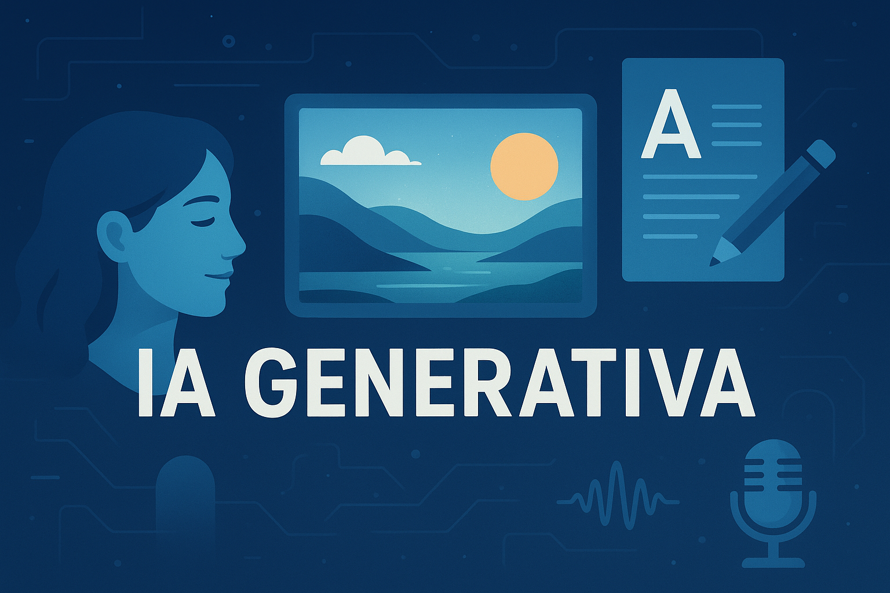

Inteligência Artificial: Avanços, Benefícios e Desafios de uma Revolução Tecnológica
A inteligência artificial (IA) deixou de ser um conceito restrito à ficção científica para se tornar um dos pilares centrais da transformação digital que vivemos hoje. De ferramentas de produtividade a sistemas complexos que moldam setores inteiros, a IA redefine como trabalhamos, nos comunicamos e nos relacionamos com o mundo. Seus benefícios são inegáveis, mas, ao mesmo tempo, os desafios técnicos, éticos e sociais ainda estão em pauta e exigem atenção constante.
Benefícios e Inovações da IA
A primeira grande contribuição da IA está na automação de processos e no aumento da eficiência. Empresas de diferentes segmentos já utilizam algoritmos inteligentes para otimizar linhas de produção, prever demandas de mercado e personalizar a experiência dos consumidores. Isso se traduz em maior competitividade e redução de custos, ao mesmo tempo em que abre espaço para novas formas de negócio.
Entre os tipos de inteligência artificial, destacam-se as IAs generativas, que têm ganhado grande notoriedade. Elas são capazes de criar conteúdos originais, como textos, imagens, áudios e vídeos. Exemplos práticos vão desde a elaboração automática de relatórios até a produção de obras artísticas digitais. Plataformas como ChatGPT, DALL·E e MidJourney são hoje populares entre usuários comuns e profissionais criativos, expandindo as fronteiras da imaginação humana.
Tipos de Inteligência Artificial
Outro ramo de destaque é a IA preditiva, usada em áreas como saúde, finanças e segurança pública. Esses sistemas analisam grandes volumes de dados e fornecem previsões que auxiliam na tomada de decisões. Hospitais, por exemplo, já utilizam IA para identificar riscos de doenças antes mesmo de sintomas se manifestarem, permitindo tratamentos mais rápidos e eficazes.
Na área de reconhecimento, temos as IAs de visão computacional e de voz, responsáveis por interpretar imagens e sons. Tecnologias de reconhecimento facial são aplicadas em aeroportos e sistemas de segurança, enquanto assistentes virtuais, como Alexa e Google Assistant, utilizam processamento de linguagem natural para entender comandos e interagir com usuários em tempo real.
Além disso, a IA desempenha um papel central no desenvolvimento de veículos autônomos. Carros que “aprendem” a ler o trânsito, identificar obstáculos e calcular rotas seguras representam um dos marcos mais complexos da aplicação dessa tecnologia. Ainda que os desafios de segurança e regulamentação sejam grandes, trata-se de um setor em rápido crescimento.
Desafios Tecnológicos
Entretanto, nem tudo é positivo. Os desafios tecnológicos para a evolução da IA são significativos. Um deles é o enorme consumo de energia necessário para treinar grandes modelos, que demanda infraestrutura computacional avançada e causa impacto ambiental. Outro desafio está relacionado à escalabilidade: criar sistemas cada vez mais inteligentes, mas que sejam acessíveis, seguros e capazes de se adaptar a diferentes contextos.
Desafios Humanos e Éticos
No campo humano, os desafios são igualmente complexos. O uso da IA levanta debates sobre privacidade, segurança e desigualdade. Dados pessoais, por exemplo, precisam ser protegidos contra usos indevidos. Há também a preocupação com a substituição de empregos, especialmente em tarefas repetitivas, o que exige políticas públicas e programas de requalificação profissional para preparar a sociedade para novas funções.
O aspecto ético é outro ponto sensível. Algoritmos podem carregar vieses invisíveis que refletem preconceitos humanos, gerando decisões discriminatórias em áreas críticas como contratações, crédito e justiça. Isso evidencia a necessidade de maior transparência e responsabilidade no desenvolvimento dessas ferramentas.
Convivência Cotidiana com a IA
Apesar dos riscos, a convivência entre humanos e inteligência artificial tende a se intensificar. No dia a dia, já convivemos com recomendações de filmes em plataformas de streaming, filtros de e-mail que identificam spam, chatbots em sites de atendimento e tradutores automáticos que aproximam culturas. O futuro aponta para uma integração ainda mais profunda, em que a IA será tão natural quanto o uso de eletricidade.
Do ponto de vista científico, a inteligência artificial abre portas para descobertas em escalas inéditas. Pesquisadores utilizam algoritmos avançados para analisar dados genômicos, prever mudanças climáticas e até auxiliar em missões espaciais. A capacidade da IA em processar informações de forma exponencial acelera descobertas que antes levariam décadas para serem alcançadas.
No entanto, cabe à sociedade definir os limites éticos e legais para que a inteligência artificial seja utilizada de forma responsável. O equilíbrio entre inovação e precaução será determinante para que os benefícios superem os riscos. Assim, a IA não deve ser vista apenas como uma ferramenta tecnológica, mas como um fenômeno social que exige debate público, regulamentação e cooperação global.
Exemplos de Uso Diário e Ferramentas Disponíveis
- ChatGPT (OpenAI): criação de textos, respostas inteligentes e suporte em tarefas.
- DALL·E e MidJourney: geração de imagens artísticas a partir de descrições textuais.
- Runway: edição e geração de vídeos com base em IA.
- Murf.ai: geração de vozes realistas para áudios e narrações.
- Canva AI: design automatizado com sugestões criativas.